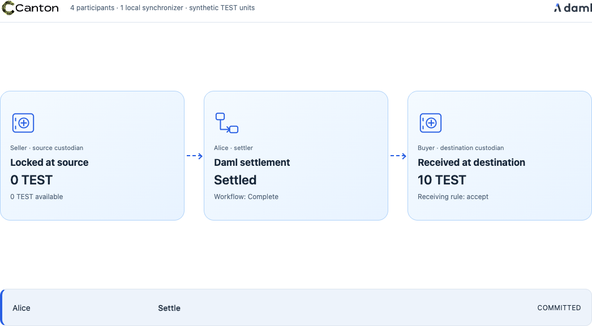
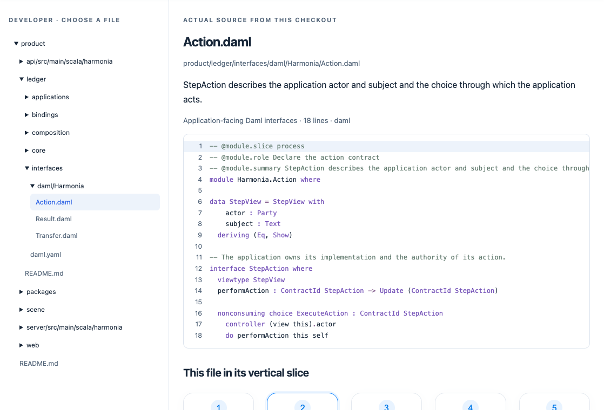

One project. Four perspectives.
Where would you like to begin?
01 / 04
Use the product.
Follow Alice from a bank decision to a property proposal. See who acts and what changes.
Illustrated stories · interactive workflows
02 / 04 · Investor
See it work on Canton.
Explore composition, privacy and settlement through real recorded runs, matched to the original milestones.
Technical demos · reproducible event logs
03 / 04
Understand the architecture.
Start with Canton contracts. See how a shared interface connects applications and where execution belongs.
Three illustrated passages · source citations
04 / 04
Read the implementation.
Explore the production file tree, annotated source and the connections within each vertical slice.
Actual code · production files only